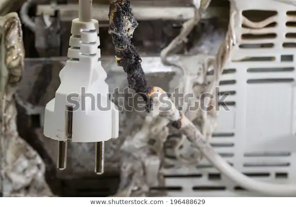

Seguridad en la cocina (situaciones emergentes)
Existen varios riesgos asociados con el uso de maquinaria (rebanadoras, picadoras, mezcladoras), equipo eléctrico, hornos, estufas, que si no son usados apropiadamente pueden causar diversos accidentes.
En caso de cualquier accidente avisar inmediatamente al responsable de cocina.
¿Cómo podemos evitar los accidentes en la cocina?
Haz clic en las imágenes para conocer más.
Cortaduras

1. No desplazarse teniendo un cuchillo con la punta al frente, manéjelos siempre hacia abajo.
2. Desconectar las rebanadoras antes de limpiarlas.
3. No poner utensilios afilados dentro de la tarja llena de agua.
4. Acomodar cuidadosamente todos los cuchillos.
5. Al deshuesar, utilizar un mandil para tal caso y no deshuesar teniendo la punta del cuchillo apuntando hacia uno mismo.
2. Desconectar las rebanadoras antes de limpiarlas.
3. No poner utensilios afilados dentro de la tarja llena de agua.
4. Acomodar cuidadosamente todos los cuchillos.
5. Al deshuesar, utilizar un mandil para tal caso y no deshuesar teniendo la punta del cuchillo apuntando hacia uno mismo.
Caídas

1. Calzar zapatos cerrados con suela antiderrapante.
2. Mantener la superficie del piso siempre limpia de derramamientos de agua, grasa y aceite.
3. No correr en la cocina.
4. Mantener las vías de circulación libres de obstáculos.
2. Mantener la superficie del piso siempre limpia de derramamientos de agua, grasa y aceite.
3. No correr en la cocina.
4. Mantener las vías de circulación libres de obstáculos.
Quemaduras

1. No colocar en altura un recipiente conteniendo líquido caliente.
2. No dejar los mangos de los sartenes y ollas con líquidos calientes, fuera de la estufa y mesas de trabajo.
3. Utilizar un trapo limpio, grueso y seco para cargar los recipientes calientes.
4. Si se carga un recipiente caliente, ir por la cocina gritando “caliente atrás”.
5. No aventar los alimentos en el sartén para evitar salpicaduras de aceite caliente.
6. Espolvorear con harina los utensilios saliendo del horno para señalar que están calientes.
2. No dejar los mangos de los sartenes y ollas con líquidos calientes, fuera de la estufa y mesas de trabajo.
3. Utilizar un trapo limpio, grueso y seco para cargar los recipientes calientes.
4. Si se carga un recipiente caliente, ir por la cocina gritando “caliente atrás”.
5. No aventar los alimentos en el sartén para evitar salpicaduras de aceite caliente.
6. Espolvorear con harina los utensilios saliendo del horno para señalar que están calientes.
Electrocuciones

1. No mojar ninguna instalación eléctrica.
2. Desconectar los aparatos eléctricos antes de limpiarlos.
2. Desconectar los aparatos eléctricos antes de limpiarlos.
Explosiones

1. Checar el cierre de la llave de gas antes de abandonar la cocina.
2. Presentar una flama ante la hornilla antes de abrir el gas.
3. Dejar abierta la puerta del horno que se apague y esperar unos minutos antes de volver a encenderlo.
4. Controlar la existencia de la flama después de un derrame.
2. Presentar una flama ante la hornilla antes de abrir el gas.
3. Dejar abierta la puerta del horno que se apague y esperar unos minutos antes de volver a encenderlo.
4. Controlar la existencia de la flama después de un derrame.
Diversos

1. No poner productos de limpieza (cloro, detergente, insecticida) en botellas reservadas a las bebidas.
¿Sabía qué...?
¿Sabía que los accidentes son más frecuentes debido al desorden, al cansancio o a la falta de atención en el trabajo?